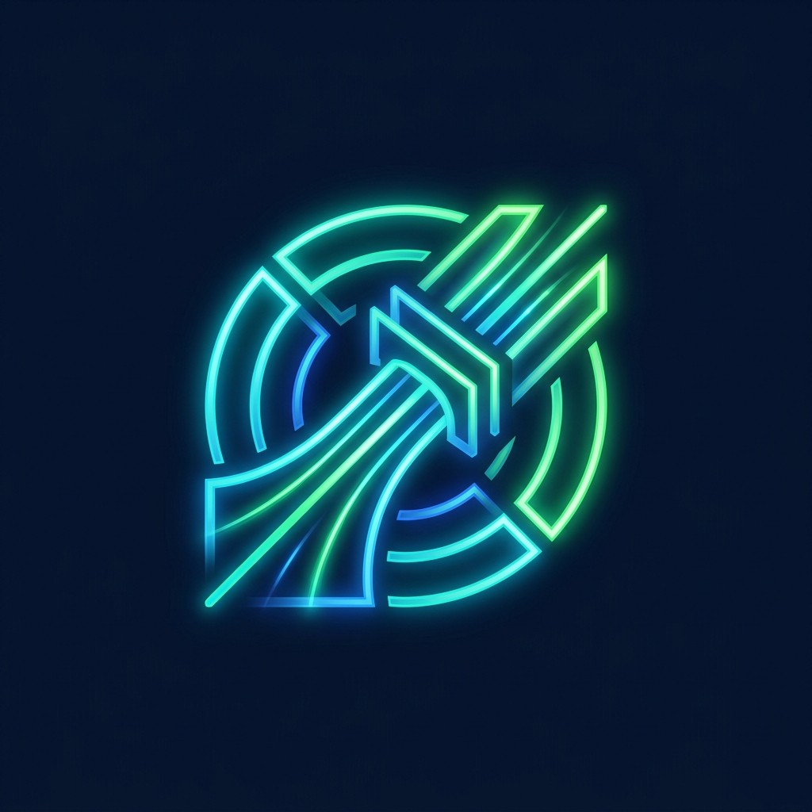

Sluice alphaInstallable SDK, CLI, and HTTP tooling for reserve-aware inbound liquidity on Fiber.
npm install @ticoworld/sluice@alpha
Explore the SDK, CLI, and HTTP integrations. Output reflects the recorded 1 CKB proof below.
This walks through the real before/after payment proof recorded on local Fiber nodes node13 → node14.
| Target Payment | 1 CKB |
|---|---|
| Receiver Reserve | -- |
| Opener Funding | -- |
| Time to Ready | ~72s (recorded) |
Sluice provides typed, tested interfaces for operators, wallets, and merchants.
Quote, readiness, prepare, and payment proof. Published on npm.
docs/SDK.md →Operator, merchant, and wallet deployment patterns.
docs/DEPLOYMENT.md →Readiness check before showing a receive invoice as payable.
examples/wallet-backend →Failed payment, prepare call, successful retry.
examples/merchant-checkout →Read-only setup check before running anything live.
docs/DEMO.md →@ticoworld/sluice)Full detail: docs/REAL_VS_SIMULATED.md